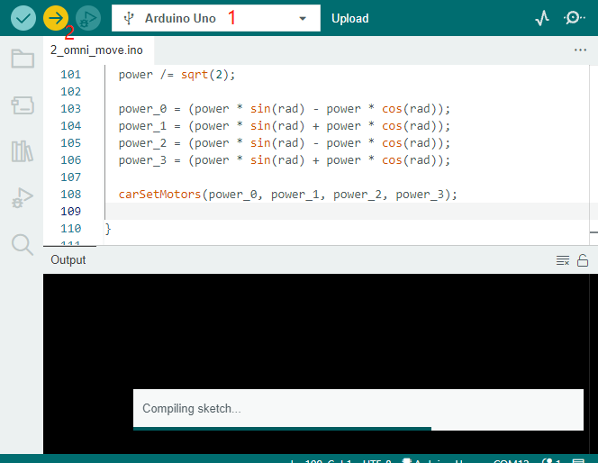
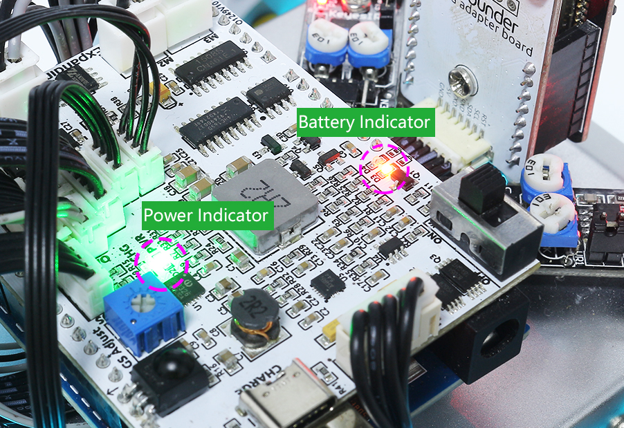

Note
こんにちは、SunFounderのRaspberry Pi & Arduino & ESP32愛好家コミュニティへようこそ！Facebook上でRaspberry Pi、Arduino、ESP32についてもっと深く掘り下げ、他の愛好家と交流しましょう。
参加する理由は？
エキスパートサポート：コミュニティやチームの助けを借りて、販売後の問題や技術的な課題を解決します。
学び＆共有：ヒントやチュートリアルを交換してスキルを向上させましょう。
独占的なプレビュー：新製品の発表や先行プレビューに早期アクセスしましょう。
特別割引：最新製品の独占割引をお楽しみください。
祭りのプロモーションとギフト：ギフトや祝日のプロモーションに参加しましょう。
👉 私たちと一緒に探索し、創造する準備はできていますか？[ここ]をクリックして今すぐ参加しましょう！
2. 全方向移動
このプロジェクトでは、Zeus Carを0, 45, 90, 135, 180, 225, 270, 315度の方向に移動させる方法を学びます。
地面の摩擦や構造の許容差を無視すると、その移動経路は八角形となり、最終的には出発点に戻るはずです。
どのように実行するか？
ESP32-CAMとArduinoボードは、同じRX（受信）およびTX（送信）ピンを共有しています。そのため、コードをアップロードする際は、ESP32-CAMの接続を一度切断して、衝突や潜在的な問題を避ける必要があります。
zeus-car-main\examples\2_omni_moveのパスの下にある2_omni_move.inoファイルを開きます。正しいボードとポートを選択し、 アップロード ボタンをクリックします。
Note
“Compilation error: SoftPWM.h: No such file or directory”というプロンプトが表示される場合、
SoftPWMライブラリがインストールされていないことを意味します。必要なライブラリ
SoftPWMとIRLremoteのインストールについては、 必要なライブラリをインストールする を参照してください。
電源スイッチをONにしてZeus Carを起動します。
この時点で、Zeus Carは0, 45, 90, 135, 180, 225, 270, 315度の方向に移動します。
{kind=link}
動作原理は？
Zeus Carの動きは主にこの関数によって実現されています。
void carMove(int16_t angle, int8_t power)
angle: 車を移動させたい方向。車の前方を0度として、反時計回りに角度を増やします。power: 移動のパワー、範囲は-100% ~ 100%です。powerが正の場合、車は前進し、その逆の場合は後退します。